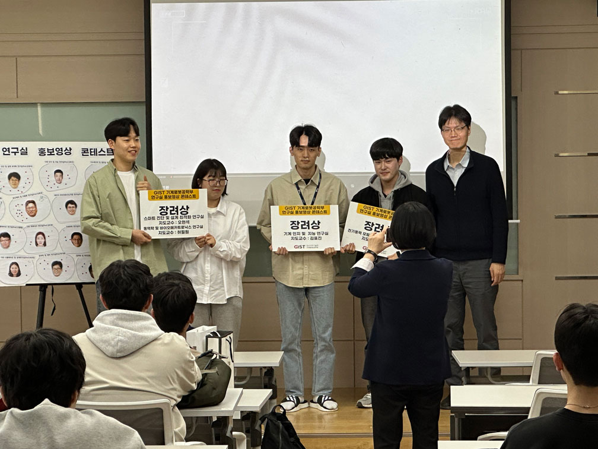

[2024/4/5] HUR Group Promotional Video

2024년 4월 5일 오픈랩이 있었다. 이날 각 연구실 홍보영상을 제작하여, 오픈랩에 참석한 학생들에게 공개하였다. 인기 홍보영상에 대한 시상을 하였는데, 우리 연구실이 장려상을 수상하였다.

CC BY-SA 4.0 Pilwon Hur. Last modified: October 08, 2024.
Website built with Franklin.jl and the Julia programming language.